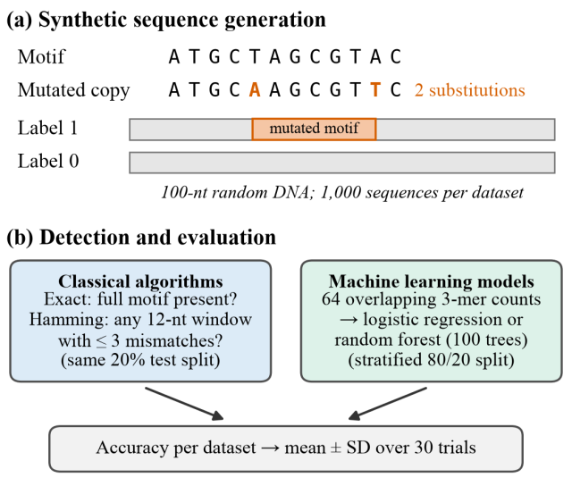

Detecting Mutated DNA Motifs: Hamming-Distance Matching Versus k-mer Machine Learning Models
Submitted · Columbia Junior Science Journal
Can machine learning find a DNA motif better than a simple mismatch count once the motif starts to mutate? I ran 180 simulated datasets to find out. Once mutations were in the picture, the simple method won every time.

The project
DNA motifs are short patterns where proteins bind to control genes, but real binding sites rarely match the motif exactly. On the advice of Dr. Phillip Compeau, computational biology faculty at Carnegie Mellon, I studied bioinformatics through Rosalind and Bioinformatics Algorithms, and this project grew out of those problems. It asks whether machine learning finds mutated motifs better than classical matching as mutation rates rise.
I generated 180 synthetic datasets of 1,000 random 100-nucleotide sequences, planting a 12-nucleotide motif mutated at rates from 0% to 50%. I compared exact matching, Hamming-distance matching, logistic regression and random forests on k-mer counts, and a convolutional neural network on the same held-out test sequences.
Built with Python · scikit-learn · CNN.

What I found
- Exact matching was perfect with no mutations but fell to 0.635 accuracy at a 10% mutation rate.
- Hamming-distance matching was the most accurate method at every nonzero mutation rate (0.969 at 10%, 0.739 at 30%).
- Longer k-mers and a CNN narrowed the gap but did not close it. The limit was how sequences were represented, not the classifier.
- A probability model predicted the classical methods' accuracy to within 0.009.